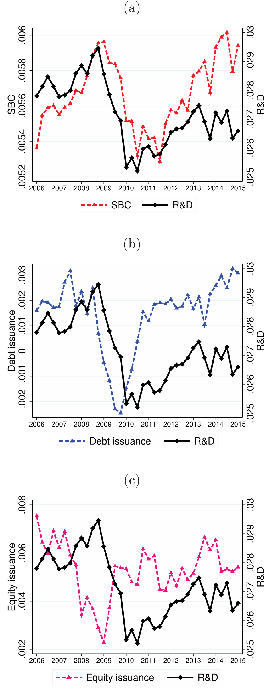
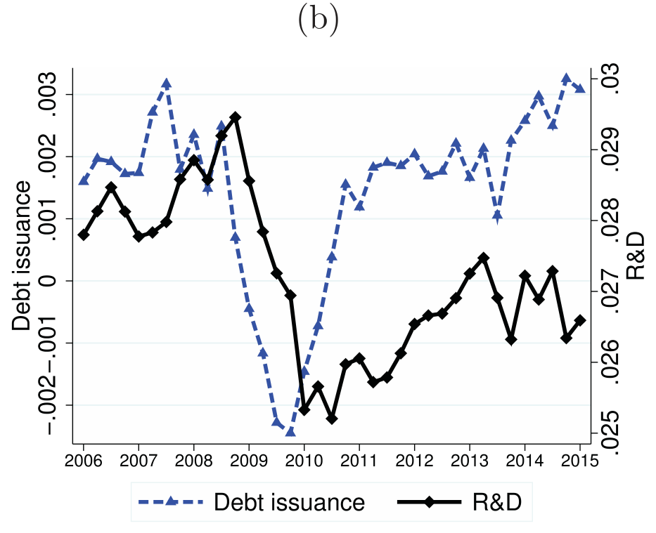
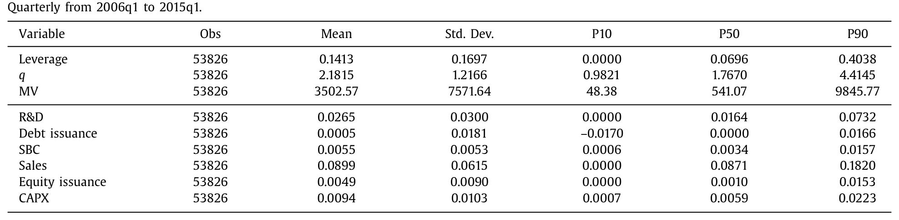
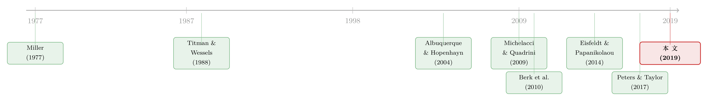

无形资本怎么融资？答案藏在员工的工资单里
本文读的是 Sun & Xiaolan (2019, Journal of Financial Economics)：软件、制药、半导体这些「新经济」公司投了大把钱在 R&D 上，可它们既不发债、也不靠增发，钱从哪来？作者给出的答案出人意料——它们是向自己的员工「借」的。公司用「先少发、后多发」的薪酬合同，把当期工资压低、腾出内部现金去投无形资本；而这套递延工资承诺又会反过来挤掉债务，作者称之为「无形资本悬挂效应」。
1 一个被教科书漏掉的融资来源
先抛一个看似简单、其实很扎手的问题：一家公司想投资，钱从哪儿来？
教科书的答案很整齐——内部现金流、发债、增发股票，三条路。可一旦把镜头对准过去三十年里崛起的那批「新经济」公司（软件、半导体、信息、制药、高科技制造），这套答案就开始打结。它们的生产函数早已从「物质密集」转向「无形密集」(intangible intensive)：值钱的不是厂房和机器，而是研发、专利、组织资本、那群高技能的人。问题是，无形资本天生不好融资——它低可重新部署 (low redeployability)、非排他 (nonexclusive)、低流动性 (low liquidity)（Hall and Lerner, 2009）。说白了，银行没法把一份「研发能力」抵押了再变卖。
于是一个自然的推断是：既然无形资产当不了好抵押品，这些公司应该更依赖股权融资。可数据偏偏不买账。这篇论文的第一个、也是最反直觉的事实是：无形资本投入最高的那批公司，杠杆反而最低，增发也并不多。
那钱到底是从哪儿冒出来的？作者的回答只有四个字：员工融资。
2 把工资「往后挪」，就是一种融资
要理解这个渠道，得先有一把能量出它的尺子。作者用的是一个会计上的新变量：股权激励费用 (stock-based compensation, SBC)——公司授予员工、但尚未行权的股票/期权的费用。
这里有个关键的制度背景：2004 年修订的 SFAS No. 123R 在 2006 年 1 月 1 日生效，要求所有上市公司按公允价值确认股权激励的成本。所以作者把样本起点干脆定在 2006q1，正好避开了这条会计准则带来的口径断裂。在这之后，超过 90% 的上市公司都会在报表里确认 SBC 费用。
但要注意，作者强调的，不是以往文献里那条路。Fama and French (2005)、Babenko et al. (2011)、McKeon (2013) 关心的是员工行权时产生的现金流——员工掏钱买股票，公司收到真金白银，这是一笔实打实的内部现金来源。本文盯的是另一头：公司用授予 SBC 的方式，把当期的工资和薪金义务递延、或替代掉。授予的那一刻并没有现金流入，但只要员工愿意「今天少拿、换明天多拿」，公司当期的预算约束就被松开了，省下的内部现金就能拿去投资。
这就是全文的题眼：所谓「员工融资」，是递延工资，不是行权现金。员工今天接受更低的工资，是因为他们预期未来有更高的补偿——这一「先少后多」的回报曲线，本质上就是公司在向员工借钱。
接着，一个自然的问题是：这条「借工资」的渠道，到底是不是真的？还是只是个会计巧合？
3 三个事实：钱跟着「无形」走，不跟着「债」走
作者先把公司按 SBC-to-assets 分成五组看横截面，再看时间序列上的同涨同跌。结论非常干净：
第一，SBC 高的公司，杠杆低、市净率高、债务发行甚至为负。 全样本平均杠杆只有 0.14（比 1980 年起算的老样本低不少）；而高 SBC 组里，债务发行 (debt issuance) 随 SBC 上升单调下降，到了最高组干脆变成负值——这些公司不是在借债，而是在还债。
第二，无形投资和员工融资亦步亦趋，但和常规融资不沾边。 把每季度的公司层面均值画成时间序列，R&D 投资与 SBC 的相关系数高达 0.65；而 R&D 与增发的相关只有 0.32，与债务发行更是 -0.07。换句话说，公司投得越多无形资本，越是靠员工、而不是靠债或股权来接盘。

Figure 2: presents the time series of intangible investment
第三，越「无形密集」的行业，这条规律越明显。 作者用行业作为无形资本密集度的粗筛，对比高科技与传统行业（制造与消费品）。高科技行业里 R&D 与 SBC 的相关是 0.53，传统行业是 0.43；而无论哪个行业，债务发行、常规增发与 R&D 的相关都很低——债务发行与 R&D 的相关在传统行业是 -0.02、高科技是 -0.04，几乎贴着零甚至为负。

Figure 3: , for the more intangible intensive, high tech indus-
这种行业差异在静态数字上同样刺眼：高科技子样本的杠杆只有 0.105，传统行业却有 0.186；高科技的 SBC-to-assets 约 0.006，几乎是传统行业（约 0.003）的两倍。而且在相对量级上，SBC-to-assets 平均是「债务发行＋常规增发」之和的两倍——员工融资不是个零头，而是主力。

Table 1
到这里，事实层面已经很扎实了。但真正关键的一步，是要回答一个「为什么」：为什么递延工资会把债务挤出去？
4 真正的机关：有限承诺与「可携带」的无形资本
这正是全文最精彩的地方，也是它区别于一堆「员工借钱」文献的地方。
作者的核心洞察是：当公司投资无形资本去提升劳动生产率时，有一部分无形资本是粘在员工身上、和员工不可分离的。而员工是有限承诺 (limited commitment) 的——一旦他们觉得外面有更好的去处，就可以「拍屁股走人」，并带走其中可携带 (portable) 的那一部分无形资本。
于是问题来了：公司怎么留人？答案是给出后置的工资合同 (backloaded wage scheme)——承诺更高的未来补偿。可一旦未来的工资义务越积越多，能够抵押给外部债权人的未来现金流 (pledgeable cash flow) 就被压缩了。债权人一看，这家公司的现金流早被员工的索取权占了大头，自然不敢多借。这就是作者命名的 无形资本悬挂效应 (intangible capital overhang effect)：无形资本积累得越多，留人动机（员工融资）越占上风，债务合同就被挤出。
这里有个很漂亮的类比：员工「走人」的威胁，相当于债权人「清算」的威胁。在标准的抵押债务里，是外部投资者威胁清算公司资产；在这里，是员工威胁带走无形资本。所以无形资本虽然当不了银行的好抵押品，却能当员工的好抵押品——公司是在「拿无形资本向员工借钱」。
别把它误读成「融资约束下的公司被迫向工人借钱」。本文的反转恰恰在于：公司即便还有没用完的债务额度，也会主动选择员工融资；而且这条渠道专门对应无形投资，不对应有形投资——物质资本（CAPX）的投资政策在各 SBC 组之间看不出差别。这与 Michelacci and Quadrini (2009)、Guiso et al. (2013) 那种「靠后置工资在内部信贷市场隐性借款」的机制是分得开的：那是融资约束的产物，这是留人动机的产物。
5 模型：把「悬挂效应」写成一个贝尔曼方程
为了把这条不可直接观测的渠道量化出来，作者搭了一个动态模型：公司一边积累无形资本，一边面对有成本的外部融资，同时受制于员工的有限承诺。模型的逻辑可以一步步拆开来看。
第一步，谁能走、能带走多少。 设公司持有无形资本 \(k\)，其中可被员工带走的比例为 \(\phi\)（可携带率，portability）。员工若离开，外部选择的价值正比于他能卷走的那部分无形资本，约为 \(\phi k\)。
第二步，怎么把人留下。 公司通过承诺未来补偿来留人。把对员工的承诺价值记为 \(U(W')\)（\(W\) 是「递延员工索取权」这一状态变量）。要让员工留下，必须满足参与/有限承诺约束：留下来拿到的承诺价值，不能低于走人能带走的外部选择。
第三步，这对债务意味着什么。 承诺给员工的索取权越多，能留给债权人的可抵押现金流越少。于是无形资本的积累，通过抬高 \(U(W')\)，反过来收紧了债务容量——这就是悬挂效应在方程里的样子。
把这些拼起来，公司的价值函数（贝尔曼方程）大致是下面这个结构。其中最核心的，是约束项里那一行「留人 vs. 走人」的较量：
这个结构把全文的直觉钉死在了 \(\phi\) 上：可携带率 \(\phi\) 越高，员工的「走人威胁」越可信，公司越要靠加码未来工资来留人，悬挂效应越强，债务被挤得越狠。 反过来，把当期工资压低、换取更高的未来工资，又能腾出内部现金顶替债务去投资——所以最优的工资合同，本质上是在为无形投资安排一个最优的工资义务时点。
值得一提的是，模型还给出了一个不太直观的推论：因为悬挂效应压缩了债务容量，为了应对未来的下行风险，公司反而会主动留出一部分没用完的债务额度当作预防性储备。这把「为什么高无形行业杠杆低」给出了一个和标准抵押约束完全不同的解释——不是「无形资产抵押不了所以借不到」，而是「留人的运营约束太紧，公司不愿、也不必借那么多」。
6 结构估计与三个反事实
光有模型不够，作者用两个分裂样本（高科技 vs. 传统行业）分别做了结构估计，因为这两组在资本无形度和融资形态上差得最远。模型能同时拟合出两组在杠杆与融资形态上的跨行业差异。
随后是三个反事实实验，每一个都在回应一种可能的质疑：
其一，能不能用旧模型「换个标签」糊弄过去？ 把员工融资渠道关掉，模型就退化成 Gomes (2001)、Hennessy and Whited (2005)、Jermann and Quadrini (2012) 那类「物质资本投资＋债务融资」的标准动态投资模型。此时无形投资与债务发行的相关性变成了正的——这与数据里观察到的负/零相关正好相反。所以本文的渠道，不是把物质资本重新解释成无形资本就能复制出来的。
其二，把可携带率调高会怎样？ 作者把传统行业的无形资本可携带率，外生地提到高科技行业的水平。结果：员工融资（未来承诺）上升，债务容量因悬挂效应下降，但总借贷容量净增加了 20%。这就从一个全新角度回答了「为什么高无形行业平均杠杆低」——它们不是借不到，而是被「劳动诱发的运营约束」绑住了手脚，于是出于预防动机留下了更多财务余地。
其三，放松融资约束，高科技公司会不会改用债务？ 作者把高科技行业的债务执行率 (debt enforcement rate) 调到传统行业的水平，相当于给高科技公司一次资本市场条件的正向冲击。直觉上，约束松了，公司该多用有税盾好处的债务、少用员工融资才对。但答案是：不会。只要投资机会和可携带率不变，驱动员工融资的留人动机就不变——高科技公司的员工融资在这个实验里几乎没动。这条反事实把本文的渠道，和「融资约束公司的内部信贷市场」彻底区分开了：用工资合同融资无形资本，并不以公司是否受融资约束为前提。
7 文献脉络
把这条线索往回捋，会看到三股水流在这篇论文里汇合。
第一股是资本结构的决定因素。从 Miller (1977) 的债与税、到 Titman and Wessels (1988) 对资本结构决定因素的经典梳理，再到 Berk et al. (2010) 率先把「公司专属人力资本的破产成本」引入动态权衡理论——这条线一直在问：到底什么决定了一家公司的负债。本文的回答是：员工合同会顶替债务合同，成为一种新的融资来源。
第二股是有限承诺下的动态契约。这套工具从 Harris and Holstrom (1982) 起步，被 Albuquerque and Hopenhayn (2004) 用来刻画融资约束与公司动态，又被 Rampini and Viswanathan (2010, 2013) 接到抵押与资本结构上。与本文最近的是 Michelacci and Quadrini (2009)：他们让长期工资合同与投资互动，但本文的独到之处，是把无形资本的内生抵押率和可携带性接了进来，第一个量化了「劳动部门的有限承诺」对公司财务决策的影响。
第三股是无形资本本身。Eisfeldt and Papanikolaou (2014) 研究无形资本的价值与归属，Peters and Taylor (2017) 重估了无形资本与投资-\(q\) 的关系；而 Brown et al. (2009) 记录了 1990 年代 R&D 热潮里，公司靠现金流和股权来融资创新。本文站在这三股水流的交汇处，给「无形资本如何被非金融合同融资」第一次提供了理论基础。（关于员工带走知识、反而成为激励来源的机制，亦可参见《被「偷走」的增长：当员工带走的知识，反而成了让他卖力的理由》；关于上市融资如何改变公司的用工行为，可参见《上市之后，公司为什么开始疯狂招人？》。）

8 评论与延伸（Q&A + 研究方向）
(a) 几个可能的疑问
Q：用 SBC 当「员工融资」的代理变量，会不会把税盾、激励这些别的动机也混进来了？
会有这个担心，这也是为什么作者要走结构估计这条路。SBC 同时承载了税收优势（Graham et al., 2004；Babenko and Tserlukevich, 2009）、激励、留人等多重含义；单看相关性无法把「递延融资」那一份剥出来。作者通过显式假设员工与股东的偏好，把不可直接观测的「递延补偿的现金价值」给量化出来——这正是结构方法相对纯实证的价值所在。
Q：本文和「公司靠员工行权的现金流融资」（Fama-French 2005、Babenko et al. 2011）到底差在哪？
差在现金流的方向和时点。那条文献讲的是员工行权时公司收到现金，是一笔真实的现金流入；本文讲的是公司在授予时递延/替代了当期工资义务，授予当下并没有现金进出，松动的是预算约束。一个是「收钱」，一个是「省钱／欠钱」。
Q：为什么是债务被挤出，而不是股权？无形资产抵押不了，增发不才是最自然的替代吗？
数据恰恰相反：在控制了员工融资之后，增发与 R&D 是负相关的。本文的逻辑是，递延工资压缩的是「可抵押给债权人的未来现金流」，所以首当其冲被挤掉的是债务；而员工融资本身就替代了相当一部分外部融资需求，于是增发也并不旺。低抵押价值并没有逼公司转向股权，而是逼它转向了员工。
Q：「悬挂效应」和经典的债务悬挂 (debt overhang) 是一回事吗？
不是。债务悬挂讲的是既有债务让股东不愿投正 NPV 项目；这里的「无形资本悬挂」讲的是无形资本积累抬高了对员工的承诺索取权，从而压缩了公司的债务容量。被悬挂的不是投资激励，而是借债能力。
Q：可携带率 φ 是结构估计出来的「黑箱参数」，它可信吗？
这是识别上最值得盯的地方。φ 无法直接观测，只能靠模型矩匹配（高科技 vs. 传统两组的杠杆与融资形态差异）反推。它的可信度取决于这些矩是否真的主要由「留人动机」驱动，而非别的行业异质性（如成长机会、风险）。作者用反事实做了不少压力测试，但 φ 终究是模型内生的解释，而非外生可测的量。
Q：样本只从 2006 年起、不到十年，会不会太短？
短是事实，受限于 SFAS No. 123R 的生效时点——在此之前 SBC 不被强制确认，口径不可比。好处是样本干净、口径一致；代价是只覆盖了一个特定的宏观区间（含金融危机），外推到更长周期需谨慎。
(b) 几个可能的研究问题与提案
1. 员工融资如何映射到公司债的定价与流动性？ 【经济故事】如果递延工资真的压缩了可抵押现金流、挤出了债务，那么对仍在发债的高无形公司，债权人理应索取更高的利差，或在条款上更保守。换句话说，「无形资本悬挂」应该在信用利差里留下指纹。 【可行性】中。需要把 SBC/递延薪酬与公司债二级市场数据（TRACE）、发行条款（Mergent FISD）匹配。识别上可借助 SFAS 123R 这类会计冲击或行业可携带率差异。难点在于把「悬挂效应」从信用风险的其他来源中分离出来。
2. 外资持有人会不会改变这条渠道？ 【经济故事】跨境投资者对「员工可携带无形资本」这类软信息的定价能力可能弱于本地投资者；若高无形公司的债务越来越多由外资持有，悬挂效应在定价中的体现可能被稀释或放大。 【可行性】中偏低。需要 TRACE／持有人层面数据＋公司无形度，识别外资份额的外生变动（如指数纳入）。机制干净但数据拼接难，且「员工融资」在债券层面只能间接观测。
3. 劳动力市场流动性冲击作为 φ 的外生变动。 【经济故事】本文的 φ 是个结构参数；若能找到一个外生改变员工「走人威胁」的冲击——比如竞业禁止协议 (non-compete) 的州级法律变动——就能直接检验「可携带率↑ ⇒ 员工融资↑、债务↓」这条因果链。 【可行性】高。竞业禁止的州法变动（如各州陆续放松/收紧）是文献里常用的准自然实验，可做双重差分 (difference-in-differences, DiD)，配合 Compustat 的 SBC、R&D、杠杆。这是把本文从「结构标定」推向「外生识别」最现实的一步。
4. 危机时刻：当员工的外部选择突然变差。 【经济故事】衰退里员工跳槽变难、外部选择 \(\phi k\) 的价值下降，留人约束放松，公司是否会临时多借债、少给递延承诺？这能直接检验悬挂效应是否随宏观状态摆动。 【可行性】中。可用 2008–09 或 2020 的失业率飙升作为冲击，看高无形公司的 SBC 与债务发行如何反向调整；难点是把劳动力市场松紧与公司基本面冲击分开。
9 我的判断
这篇论文最漂亮的地方，是把一个大家都「看见但没说清」的现象——高无形公司既不发债也不大增发，钱却源源不断——归结到一个机制上：无形资本粘在人身上，留人就是融资，而留人又反手挤掉了债务。 它把劳动经济学里的有限承诺，干净利落地接到了公司财务的资本结构上，并且给出了一个能同时解释跨行业杠杆差异和融资形态差异的统一框架。第一个把「劳动部门的有限承诺」量化进财务决策，这个贡献是扎实的。
但有两处我会盯着不放。
其一是识别。全文的因果重量几乎都压在可携带率 \(\phi\) 上，而 \(\phi\) 是结构估计的产物，不是外生可测的量。横截面相关（R&D-SBC 0.65）很强，但相关不是因果——高无形与高 SBC 完全可能同被某个第三因素（成长机会、行业风险、人才稀缺度）驱动。我更想看到一个外生冲击（比如竞业禁止法的州级变动）来直接撬动「走人威胁」，把这条链子从「标定」做成「识别」。
其二是口径与外推。样本受 SFAS 123R 所限只从 2006 年起，且 SBC 只是「递延员工索取权」的一个代理——它没法捕捉非股权形式的隐性后置工资。把结论推广到未上市公司、或到更长的历史区间，都还需要更多证据。
下一步我最想看到的，是有人把这条渠道接到信用市场里去：如果悬挂效应是真的，它应该在公司债的利差、条款和发行选择上留下可观测的痕迹。那会是对这篇理论最有力的一次外部检验。
参考文献
Albuquerque, R., Hopenhayn, H.A. (2004). Optimal lending contracts and firm dynamics. Review of Economic Studies 71(2), 285–315.
Babenko, I., Lemmon, M., Tserlukevich, Y. (2011). Employee stock options and investment. Journal of Finance 66, 981–1010.
Babenko, I., Tserlukevich, Y. (2009). Analyzing the tax benefits from employee stock options. Journal of Finance 64(4), 1797–1825.
Berk, J.B., Stanton, R., Zechner, J. (2010). Human capital, bankruptcy, and capital structure. Journal of Finance 65(3), 891–926.
Brown, J.R., Fazzari, S.M., Petersen, B.C. (2009). Financing innovation and growth: cash flow, external equity, and the 1990s R&D boom. Journal of Finance 64(1), 151–185.
Eisfeldt, A.L., Papanikolaou, D. (2014). The value and ownership of intangible capital. American Economic Review 104(5), 189–194.
Fama, E.F., French, K.R. (2005). Financing decisions: who issues stock? Journal of Financial Economics 76(3), 549–582.
Hennessy, C.A., Whited, T.M. (2005). Debt dynamics. Journal of Finance 60(3), 1129–1165.
Michelacci, C., Quadrini, V. (2009). Financial markets and wages. Review of Economic Studies 76(2), 795–827.
Miller, M.H. (1977). Debt and taxes. Journal of Finance 32(2), 261–275.
Peters, R.H., Taylor, L.A. (2017). Intangible capital and the investment-q relation. Journal of Financial Economics 123(2), 251–272.
Rampini, A.A., Viswanathan, S. (2013). Collateral and capital structure. Journal of Financial Economics 109(2), 466–492.
Titman, S., Wessels, R. (1988). The determinants of capital structure choice. Journal of Finance 43(1), 1–19.